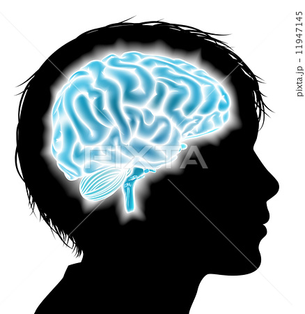

facebook
twitter
‣2020/02/10(月)
ある物事を評価する際に、一つの印象的な特徴に引きずられてしまい、他の部分の評価が歪められることがあります。これを『ハロー効果』といいます。 例えば、超難関大学を卒業したAさんがいます。その大学を卒業したことと、企業で行う事務作業においても有能であることは、本来別の問題です。しかし、難関大学卒業と聞いて、事務作業も有能に違いないと思い込む人もいます。 そのような効果について示したものが、ハロー効果です。ハロー効果の影響を受けているとおもわれることは、日常生活にあふれています。目につきやすい特徴に引きずられることなく、バイアスを取り払おうとすることも重要かもしれません。
興味深い心理に『ミラーリング』もあります。これは、他人の言動や振る舞いを鏡（ミラー）に映すようにマネることで、自分に好意や親近感を抱かせるテクニックです。 ミラーリングと類似し、関連するものに『類似性の法則』があります。人間は、自分と同類の人に対して好感を抱きやすいとする心理を指すものです。こうした心理は、たとえば営業活動などにおいて、わざと相手と同じ行動をしてみたり、相手との共通点を探してそれをアピールすることで親近感を抱かせるといった形で用いられています。
‣2020/02/10(月)
‣2020/02/10(月)
誰にでも当てはまることをいわれただけなのに、自分のことをいい当てられたと勘違いしてしまうことがあります。これを利用したテクニックが『バーナム効果』です。 「自分を理解してくれた」と誤解させると、その後の信用が得やすくなり、その人の指摘は何でも正しいと判断してしまいます。バーナム効果を用いて、セールスや占い、人生相談などを行う人もいるようです。ときには、相手の指摘や意見に注意を払い、本当に自分だけに当てはまることなのか、誰にでも当てはまることを言っていないかを疑ってみることも必要でしょう。